Panduan ini untuk pelanggan, admin, dan pengelola. Isinya menjelaskan cara memakai Indah Tracker sehari-hari: masuk, membuat nomor pelacakan, mencatat progres pekerjaan, mengirim tautan ke pelanggan, melihat laporan, dan apa yang perlu dilakukan jika sesuatu tidak berjalan seperti biasa.
Nama tombol dan menu di aplikasi berbahasa Inggris. Di panduan ini nama itu ditulis apa adanya, supaya mudah dicocokkan dengan layar.
Indah Tracker adalah halaman pelacakan pesanan mesin Indah Mesin. Anda membukanya lewat peramban (browser), seperti Chrome atau Edge. Pelanggan melihat pesanan sudah sampai tahap mana. Tim kantor dan workshop mencatat progres, menambahkan foto, lalu mengirim tautan.
Yang bisa dilakukan:
Yang tidak tersedia di versi ini:
Urutan kerja yang paling sering dipakai: siapkan template tahapan, buat nomor tracking, pasang template, perbarui progres, lalu kirim tautan.
Ada tiga pihak. Menu di kiri layar admin menyesuaikan peran Anda. Menu Admin users hanya muncul untuk pengelola utama.
| Peran di layar | Siapa biasanya | Yang bisa dilakukan |
|---|---|---|
| Pelanggan | Pemesan mesin | Membuka tautan lacak. Tidak punya akun. Melihat status, progres, tahapan, dan foto. |
| ADMIN | Tim kantor atau workshop | Dashboard, Workshop, Analytics, template tahapan, shipments, ganti kata sandi, dan pengingat. Tidak mengelola akun orang lain. |
| SUPERADMIN | Pengelola utama | Semua yang bisa dilakukan admin, plus menambah, mengubah, menonaktifkan, dan menghapus akun. Juga dapat menghapus pesanan secara permanen dari arsip. |
Setelah masuk, admin dan pengelola membuka Dashboard.
Tidak ada tombol daftar di halaman masuk.
Jika email dan kata sandi benar, Anda masuk ke Dashboard.
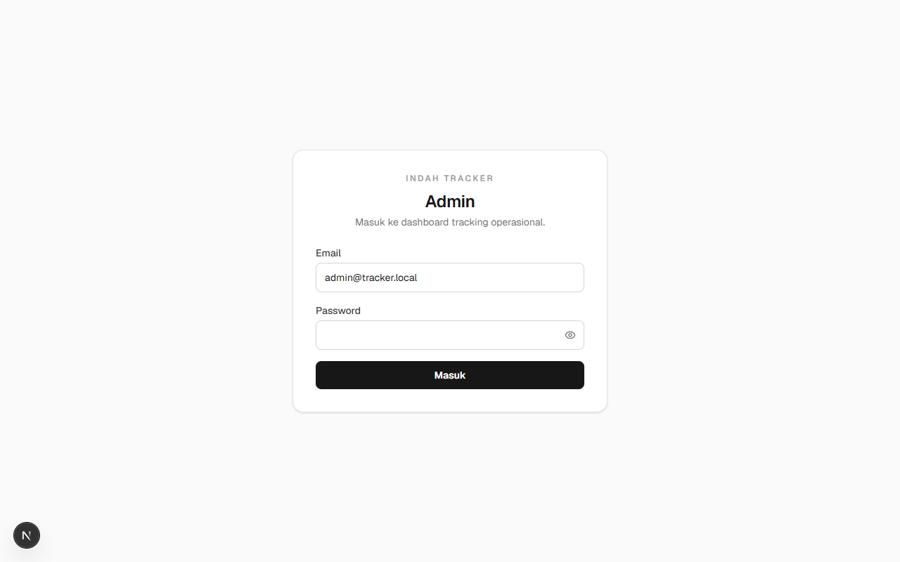
Di bagian bawah menu kiri, klik Logout. Lakukan ini jika komputer dipakai bergantian.
Layar kerja punya dua bagian:
| Menu | Untuk apa |
|---|---|
| Dashboard | Ringkasan hari ini: telat, segera jatuh tempo, dan yang masih sesuai jadwal |
| Workshop | Daftar pekerjaan yang masih berjalan, untuk update cepat dari HP |
| Analytics | Angka dan grafik menurut periode |
| Template WBS | Daftar tahapan kerja yang bisa dipakai ulang. WBS di sini artinya urutan kerja |
| Shipments | Daftar nomor pelacakan, pencarian, dan buat pesanan baru |
| Settings | Ganti kata sandi dan ambang pengingat jatuh tempo |
| Admin users | Akun pegawai. Hanya pengelola utama |
| Alur kerja | Ringkasan langkah di dalam aplikasi |
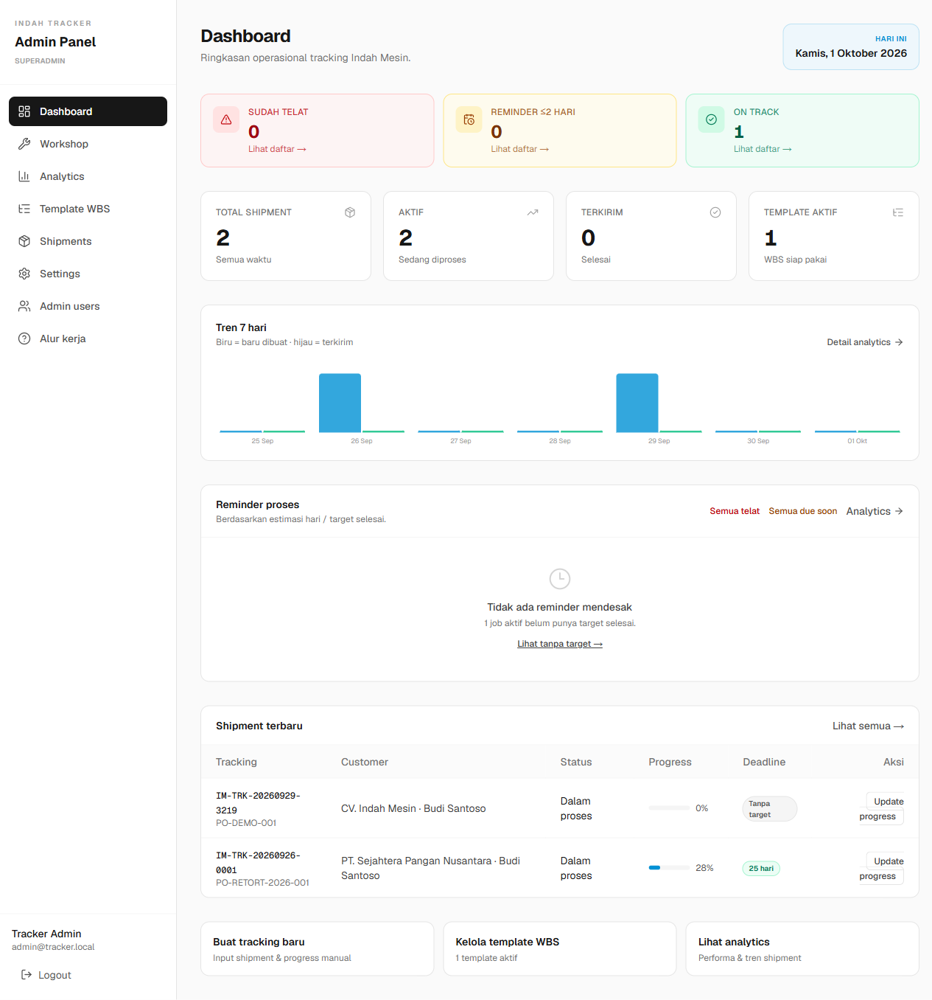
Pelanggan menerima tautan dari Indah Mesin, biasanya lewat WhatsApp. Mereka tidak perlu mendaftar.
Yang terlihat setelah berhasil:
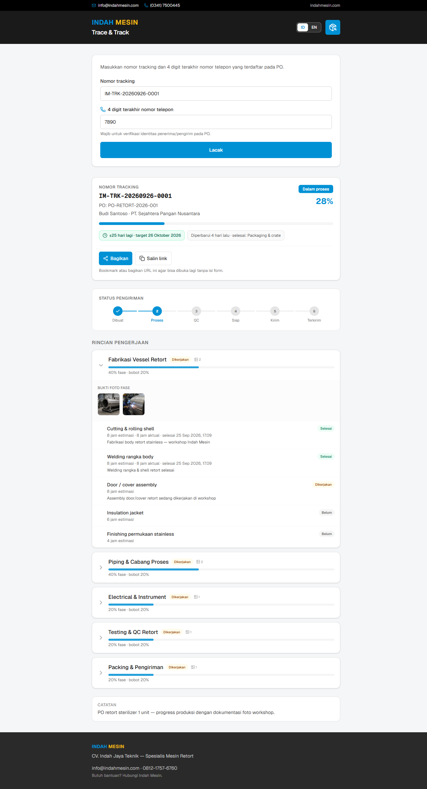
Empat digit diminta supaya orang yang hanya mengetahui nomor tracking tidak langsung melihat detail pesanan. Gunakan nomor yang tercatat saat pemesanan, bukan nomor rekan lain di perusahaan.
Arti status di panel admin:
| Status | Artinya |
|---|---|
| Dibuat | Nomor pelacakan sudah ada, pekerjaan belum berjalan |
| Dalam proses | Mesin sedang dikerjakan |
| Quality check | Pekerjaan utama selesai, sedang diperiksa |
| Siap kirim | Siap dikemas dan diberangkatkan |
| Dalam pengiriman | Sedang dalam perjalanan |
| Terkirim | Pesanan sudah sampai |
| Dibatalkan | Pesanan tidak dilanjutkan |
Sistem membuat kode baru dan membuka halaman detail pesanan.
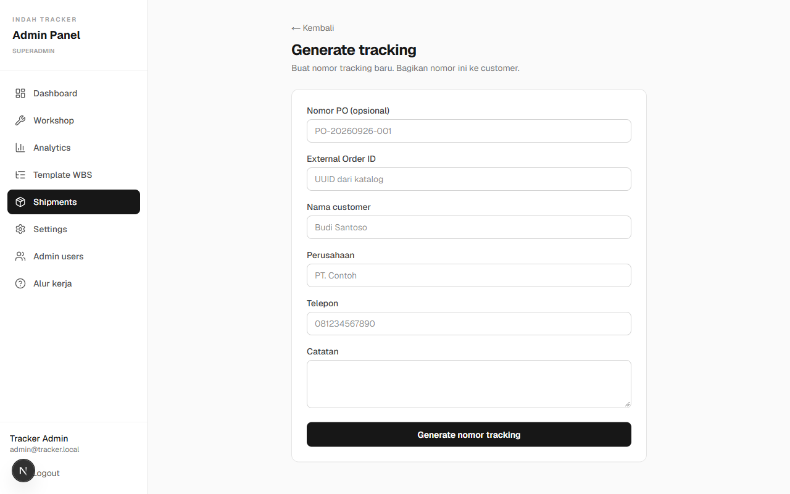
Klik nomor tracking untuk membuka detail. Di kolom Aksi ada empat ikon: salin tautan, kirim WhatsApp, buka halaman pelanggan, dan arsipkan.
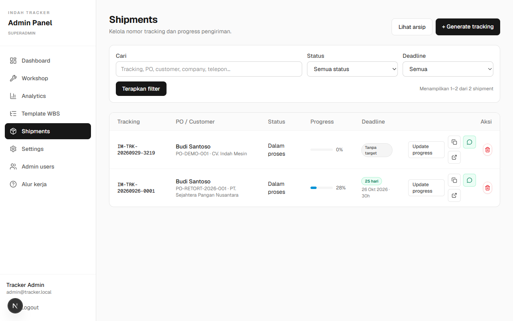
Template adalah daftar kerja yang dipakai berulang, misalnya fabrikasi, piping, kelistrikan, pengujian, lalu packing. Setelah dipasang ke satu pesanan, tiap butir ditandai satu per satu. Mengubah template tidak mengubah pesanan yang sudah berjalan.
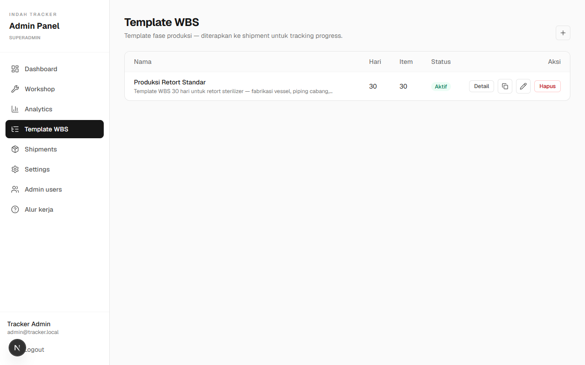
Jumlah bobot seluruh fase harus 100%. Jika belum pas, layar progres akan memberi tahu. Bagi bobot sesuai besar pekerjaan.
Persen di atas halaman dihitung dari bobot tahap yang selesai. Anda bisa menambah fase khusus untuk satu pesanan tanpa mengubah template aslinya.
Reset progress mengosongkan kemajuan pesanan itu, termasuk tanda selesai. Pakai hanya jika pemasangan template memang keliru.
Status pesanan dapat mengikuti progres, misalnya menuju Quality check saat pekerjaan hampir selesai. Anda tetap bisa memilih status secara manual di halaman detail, pada kolom Status, lalu klik Simpan.
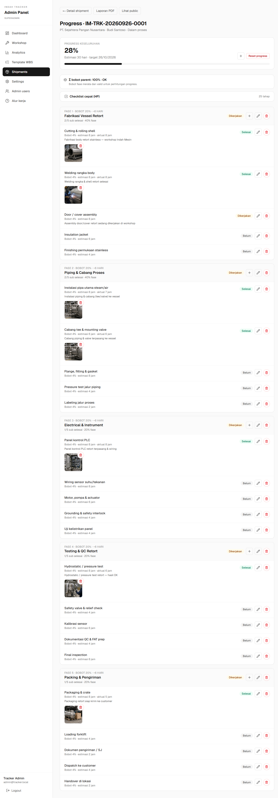
Di halaman detail, nama, perusahaan, telepon, nomor PO, dan catatan bisa diperbaiki lalu disimpan. Bagian Jejak perubahan mencatat pembaruan status, progres, foto, dan template.
Menu Workshop untuk lantai produksi. Daftarnya hanya pekerjaan yang masih berjalan.
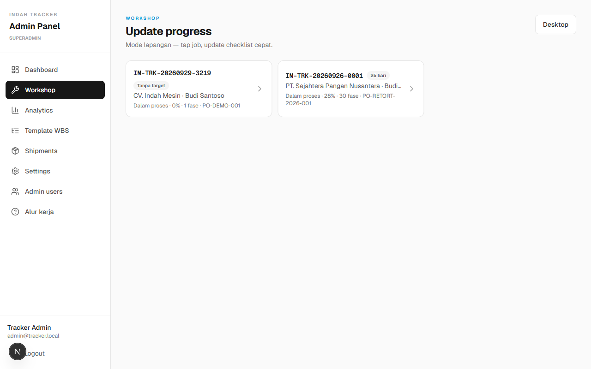
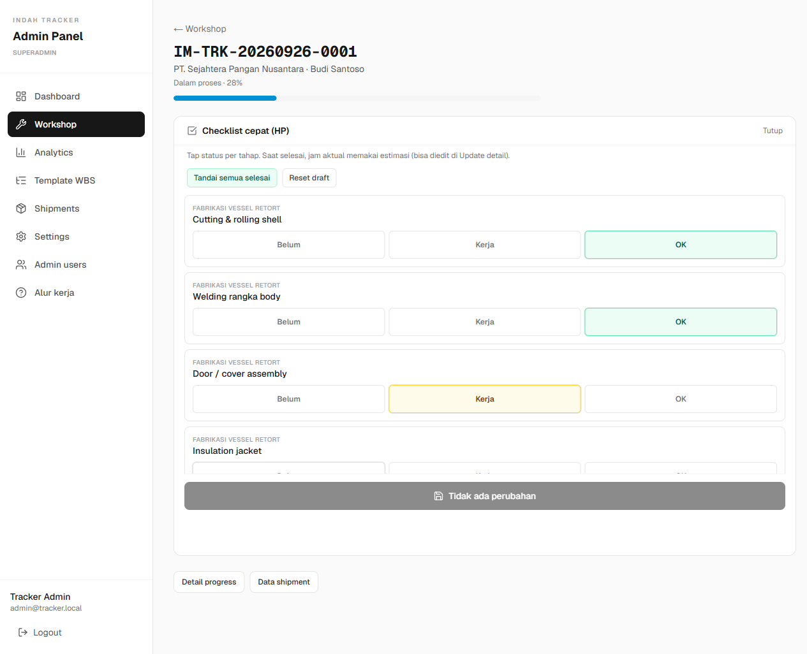
Agar lebih cepat dibuka, buka panel admin di peramban HP, lalu pilih Tambahkan ke Layar Utama. Ikon akan muncul seperti aplikasi.
Lakukan ini setelah nomor telepon pelanggan sudah benar.
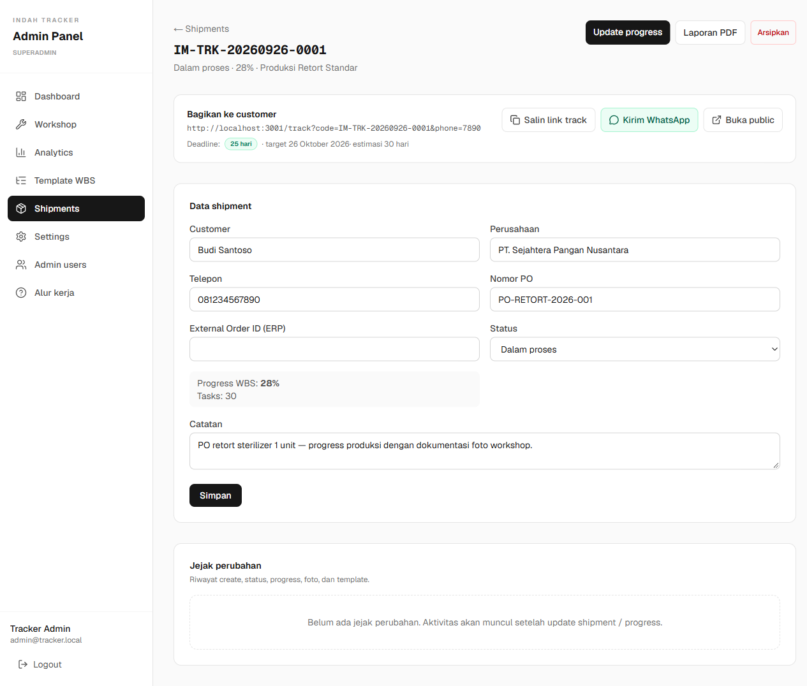
Tautan yang disalin biasanya sudah menyertakan 4 digit telepon, jadi pelanggan tinggal membuka. Jika mereka mengetik manual, ingatkan agar memakai 4 angka terakhir nomor yang tercatat di PO.
Untuk laporan satu pesanan:
Di Analytics juga ada tautan PDF pada tiap baris, plus Export CSV dan Excel untuk rekap banyak pesanan.
Klik kartu berwarna untuk membuka daftar yang sudah disaring. Jika panduan awal masih muncul di atas Dashboard, artinya template, pesanan, atau progres belum lengkap.
Tabel bawah mengurutkan pesanan aktif yang paling lama, supaya tidak ada yang terlewat. Jika grafik terlihat sepi, coba periode Semua. Angka terkirim kosong berarti belum ada pesanan yang ditandai selesai pada periode itu.
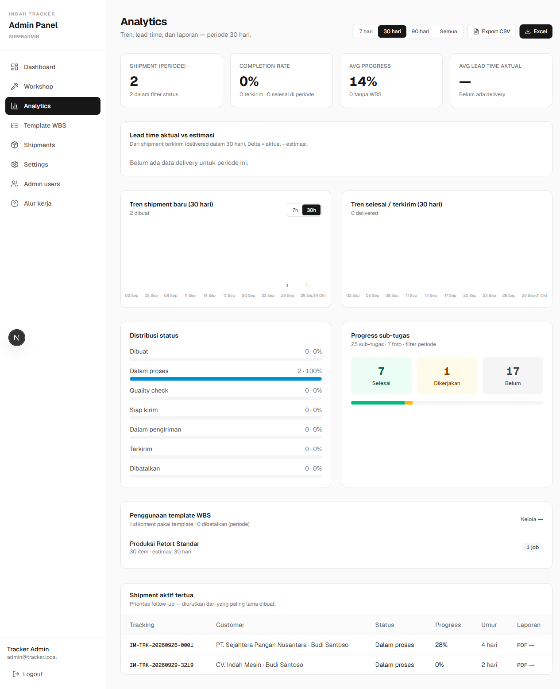
Angka soonDays menentukan kapan pesanan masuk kartu kuning di Dashboard. Isi 2 jika Anda ingin diingatkan saat target tinggal 2 hari atau kurang, lalu klik Simpan.
Jalankan reminder sekarang mengirim pengingat saat itu juga, jika email atau Telegram sudah disiapkan oleh pengelola. Tiap pesanan hanya diingatkan satu kali per saluran dalam satu hari. Bagian cadangan data di bawah halaman ini diurus pengelola sistem. Pengguna harian tidak perlu mengubahnya.
Hanya SUPERADMIN yang melihat menu Admin users.
Pada daftar akun, Edit mengubah data. Akun yang tidak dipakai lagi lebih baik dinonaktifkan daripada dihapus. Akun yang nonaktif tidak bisa masuk. Pesan di halaman masuk tetap “Email atau password salah.”, tidak menyatakan bahwa akun dimatikan. Jangan menghapus akun yang sedang Anda pakai.
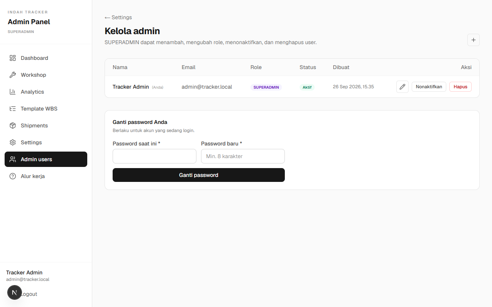
Menu Alur kerja merangkum urutan yang sama: buat nomor, pasang template, perbarui progres, kirim tautan.
Pesan yang muncul biasanya: Email atau password salah.
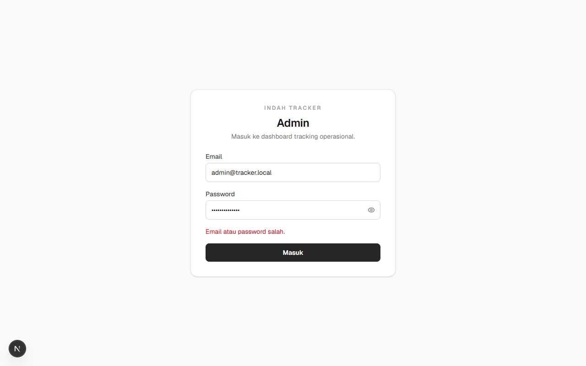
Periksa hal berikut, berurutan:
Aplikasi ini tidak mengirim tautan “lupa kata sandi” ke email. Jika halaman masuk tidak terbuka sama sekali, periksa koneksi dan alamat yang dibuka, lalu muat ulang.
Menu Admin users hanya untuk SUPERADMIN. Jika Anda yakin perannya salah, minta pengelola mengubah peran.
Halaman pelanggan menampilkan Kode tracking tidak ditemukan. Bandingkan huruf dan angka dengan pesan dari Indah Mesin, terutama angka nol dan huruf O. Contoh bentuk yang benar: IM-TRK-20260926-0001. Jika sudah sama dan tetap gagal, hubungi Indah Mesin.
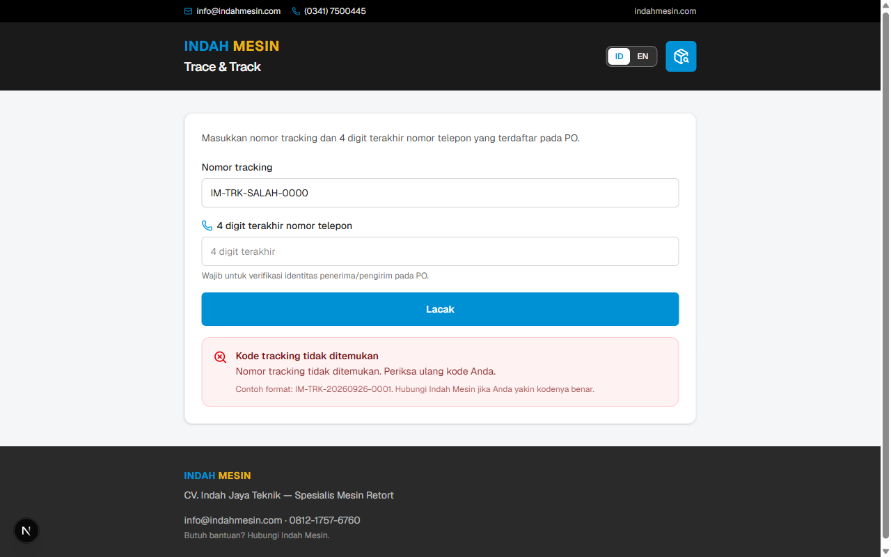
Tulisannya: Telepon tidak cocok. Nomor tracking benar, tetapi 4 digit terakhir bukan nomor yang tersimpan. Minta admin memperbaiki telepon di detail pesanan, atau gunakan nomor yang didaftarkan saat PO dibuat.
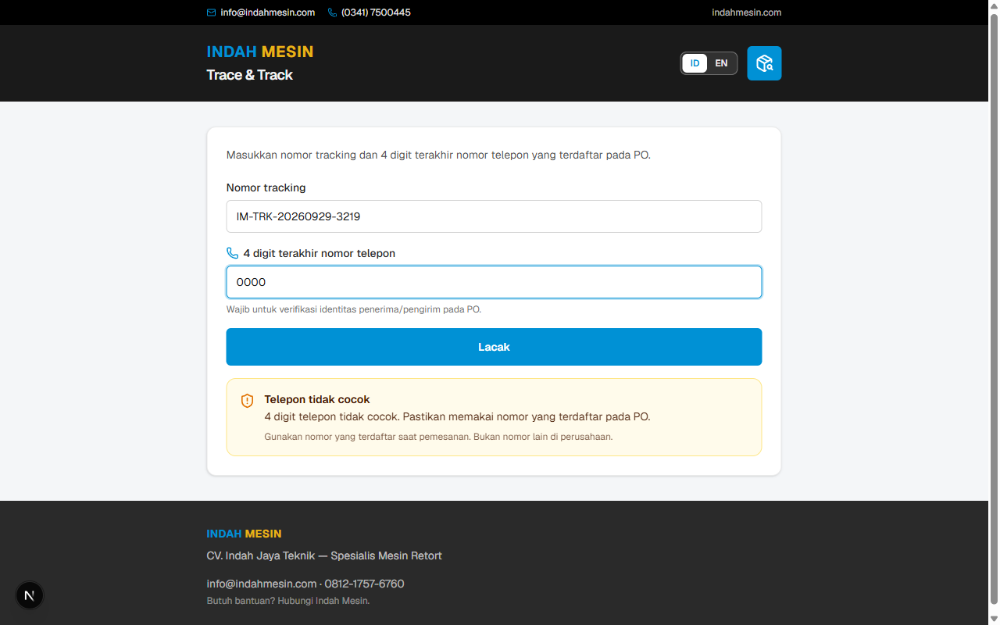
Pastikan WhatsApp terpasang, atau izinkan peramban membuka tautannya. Anda tetap bisa klik Salin link track dan menempelkannya secara manual.
Izinkan jendela pop-up untuk situs ini, lalu coba cetak lagi. Untuk Excel atau CSV, periksa folder Unduhan pada komputer.
Perkiraan hari pada template belum terpasang, atau pesanan belum punya tanggal selesai. Pasang template supaya kartu Dashboard bisa menghitung sisa hari.
Apakah pelanggan harus mendaftar?
Tidak. Pelanggan hanya membuka tautan, atau mengisi nomor tracking beserta 4 digit terakhir telepon.
Apa bedanya nomor tracking dan nomor PO?
Nomor PO adalah nomor pesanan dari pelanggan atau dari penjualan. Nomor tracking dibuat oleh Indah Tracker, selalu diawali IM-TRK-, dan inilah yang diketik di halaman lacak.
Mengapa hanya 4 digit, bukan nomor lengkap?
Empat digit cukup untuk memastikan yang membuka adalah pihak yang tahu nomor terdaftar, tanpa menampilkan nomor telepon utuh di halaman publik.
Bisakah bahasa halaman pelanggan diganti?
Bisa. Tombol ID dan EN ada di kanan atas halaman Trace & Track. Pilihan itu hanya mengubah bahasa tampilan.
Dari mana angka persen berasal?
Dari bobot tiap fase pada template. Jika sebuah fase berbobot 20% dan separuh sub-tugasnya selesai, bagian itu menyumbang sekitar setengah dari 20%. Semua fase yang selesai membawa progres ke 100%.
Apakah mengubah template ikut mengubah pesanan yang sudah berjalan?
Tidak. Perubahan template berlaku untuk pemasangan berikutnya. Tahap pesanan yang sudah berjalan diubah di Update progress.
Bisa mengerjakan dari HP?
Bisa. Masuk sebagai admin, buka Workshop, lalu tandai Belum, Kerja, atau OK. Untuk foto, buka Update progress.
Siapa yang melihat data pelanggan?
Tim yang punya akun admin. Orang lain tidak bisa membuka pesanan tanpa nomor tracking dan 4 digit telepon yang cocok.
Apa yang terjadi jika pesanan diarsipkan?
Pesanan hilang dari daftar harian, tetapi masih bisa dibuka lewat Lihat arsip dan dipulihkan. Hapus permanen hanya dilakukan pengelola utama.
Bagaimana cara mendapat salinan untuk rapat?
Buka Laporan PDF pada pesanan itu, lalu simpan atau cetak. Untuk banyak pesanan sekaligus, gunakan Export CSV atau Excel di Analytics.
Saya lupa kata sandi. Apa yang harus dilakukan?
Hubungi pengelola utama. Ia mengatur kata sandi baru dari Admin users. Tidak ada tombol lupa kata sandi di halaman masuk.
Kapan kartu kuning reminder muncul?
Saat sisa hari menuju target sama atau lebih kecil dari angka di Settings. Jika angkanya 2, pesanan yang jatuh tempo lusa sudah masuk pengingat.
Mengapa saya tidak melihat Admin users?
Menu itu hanya untuk peran SUPERADMIN.